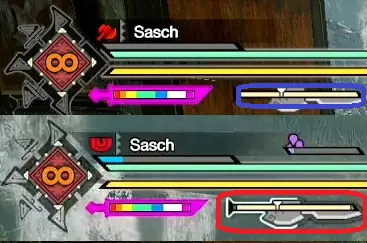

This guide was written by Sasch, and reviewed by Juzzi.
Sasch has been privately optimizing and speedrunning since MHTri, going public with the release of Sunbreak, writing and reviewing guides for Switch Axe, crunching numbers and giving advice both behind the scenes and in Gathering Hall's Switch Axe chat.
Juzzi has been playing since Iceborne's Fatalis update, regularly speedruns, has won CGS twice and strongly dislikes Guides and advice that do not account for practicality in favour of looking stronger on paper.
As such, this guide sets out to explain the following:
- Mechanical Overview of Switch Axe,
- Available moves and options,
- How to execute those moves and options,
- Available playstyles and their differences,
- How to identify your skill level,
- Switch Skills,
- Useful Tech
This notation: *Sunbreak Exclusive refers to Sunbreak-exclusive moves.
Remember to take your time. Don’t compare yourself to others, don’t let anyone tell you how you can and can’t enjoy the game you paid for. This guide does not exist to push a meta onto you, merely to guide those who are a little lost on their way to achieve measurable greatness.
Switch Axe is a weapon of extremes. On one hand, it plays nimble, dancing between monster's attacks and getting mileage out of the smallest of openings. On the other hand, it roots it's wielders in place, unflinchingly staying within a short radius,
as if their life depended on it. This duality is reflected in the playstyles, the setbuilding philosophy and all the way down to weapon design, where it has two modes available, neither of which it really wants to be in.
The skill floor for using the SwaxeSwitch Axe is above average, making it not the best choice for complete newcomers that just want to play, but a solid choice for anyone willing to learn. The raised skill floor
stems from the available defensive options, or lack thereof. Attacks are avoided by means of positioning, i.e. knowing where to stand when, Wirestep*Sunbreak Exclusive, which requires a wirebug, Elemental Burst Counter*Sunbreak Exclusive,
which requires 2 wirebugs and takes a whole second to set up, and sidehops, which have miniscule iframes in Rise and Sunbreak.
Switch Axe's skill ceiling is immensely high. Knowledge in using this weapon will translate well into other weapons.
This weapon is for you, if you:
- Enjoy a steeper, more punishing learning curve
- Want a deeper understanding of how MH works
- Have patience and the ability to identify and calmly fix your mistakes
- Enjoy more free-form combat
The following is a list of the most commonly used moves:
Basic moves:
- Axe - Fade Slash: Backwards+ after any move that ends in axe
- Axe - Overhead Slash, Forward Overhead Slash: Forward+
- Morph: after any attack, sword->axe, axe->sword only if you have gauge
- Dodgemorph: after any dodge
- Sword - Double Slash:
- Sword - Overhead Slash:
- Drawmorph: while moving at all
- Finishing/Zero Sum Discharge: +, then repeatedly
- Sheathe:
- Dodge:
- Soaring Wyvern Blade, Invincible Gambit, Wirestep*Sunbreak Exclusive: +
- Switch Charger: +
- Elemental Burst Counter*Sunbreak Exclusive: +->
- Morph Loop: From axe: ->+->
- 2-Staged Morph Slash Combo*Sunbreak Exclusive: From axe: Wild Swing ()->->(optional)
You will learn more about the combos in Section 5.
These are the Stats Switch Axe users should care about:

Fig. 3.0A - Weapon Stats
Attack: Important for all Playstyles, universal damage, usually referred to as Raw. Sunbreak does not use bloat values, so the numbers here are as-is.
Sharpness: Modifier for Raw and Elemental Damage. Sets that focus on Elemental Damage shouldn't consider anything below Purple Sharpness, while Raw sets can get away with white. Bouncing is less of a factor for Switch Axe, as Sword Mode has built-in Fencing and cannot bounce, although damage reduction will still apply.
Unlike other Weapon types, Switch Axe does not have built-in sharpness reduction modifiers, every Weapon hit consumes 1 unit of Sharpness, making it important to use skills such as Heaven-Sent or Master's Touch.
| Sharpness | Raw Mod | Elemod |
|---|---|---|
| Purple | 1.39 | 1.25 |
| White | 1.32 | 1.15 |
| Blue | 1.2 | 1.0625 |
| Green | 1.05 | 1 |
| Yellow | 1 | 0.75 |
| Orange | 0.75 | 0.5 |
| Red | 0.5 | 0.25 |
| Fig 3.0B - Sharpness Table | ||
Affinity: Even though our Phial Ticks can no longer crit as they could in World/Iceborne, the majority of damage still comes from Weapon hits. Additionally, Affinity helps with Sharpness through Master's Touch. It always matters.
Defense Bonus: Due to the nature of the Defense stat's scaling, any additional defense is unlikely to have an impact on damage received, making it a negligible Bonus at best. Safe to ignore.
Slots: Often a bonus, but not hard-required for a Weapon to be good.
Rampage Slot: Given that Phial Switch Boost is a Rampage level 3 decoration, Rampage 1 Slots are immediate non-contenders, as the opportunity cost to get them to Level 3 is too large. Phial Switch Boost is almost mandatory for how much Switch Axe relies on morphing.
Phial Type: These dictate the bonuses you get from hitting things in Sword Mode and, by extension through Phial Switch Boost and Rapid Morph, for Morph Loop. Power Phials give a 15% boost to Raw and take the longest to Amp, Element Phials amp faster and grant +45% to Element/Status. Exhaust Phials drain Monster's Stamina and get a flat amount of KO on all hits. These Amp fast.
These three are usually recommended; Exhaust/Power for progression, Power/Element for endgame.
Poison, Paralysis and Dragon phials give Poison, Paralysis Status and Dragon Element in Sword Mode, respectively. These are only worth using if the remaining stats on the Weapon blow everything else out of the water. This is almost never the case in Rise/Sunbreak.
Switch Axe revolves around two main mechanics: Amp and the Sword Gauge. Morphing into Sword, or attacking in Sword mode, as well as being in Counter Stance*Sunbreak Exclusive, consumes Sword Gauge.

Fig. 4.0A - Sword Gauge, Amp Meter
Fig. 4.0B - Amped State
The process of amping can be completely skipped by successfully countering*Sunbreak Exclusive:
Fig 4.0C - Amping with EBC
Hitting a monster while Amped generates a small explosion, referred to as a Phial Tick. They attach to the space the monster and weapon met, not to the monster itself. Their damage can rival actual hits, which makes being Amped a top priority for Swaxe.
Switch Axe has two notable playstyles, one being more focused on standing your ground by using EBC*Elemental Burst Counter, Sunbreak Exclusive as much as possible and supplementing with Morph Loops, the other
being focused on Iframes from hops, rolls and Wirestep*Sunbreak Exclusive, EBC*Elemental Burst Counter, Sunbreak Exclusive, and supplemental Morph Loops.
On paper, both seem similar, but in practice they want different Sets and Weapons altogether, and handle monsters differently. Dodge-oriented sets have less synergy with Element, but work fantastic with Status/Raw, through Status Trigger, Adrenaline Rush and Bladescale Hone.
Regardless of the playstyle you want to pick, the choice of Switch Skills and utility moves remains largely the same. These are:
Open image in new tab
| Slot | Name | Name | Name | Comment |
|---|---|---|---|---|
| 1 | Forward Slash | Forward Overhead Slash | Forward Overhead Slash is a long commitment, gap-closing move that can lead into triple sword slash. Forward Slash can be used to quickly reposition and inch closer, if needed. Realistically, you’ll always Morph Draw, making the pick preference based. |
|
| 2 | Finishing Discharge | Compressed Finishing Discharge | Finishing Discharge turns into Zero Sum Discharge when the weapon is amped, which has amazing utility.
It shouldn’t be relied upon for standard gameplay/main damage output, but its possibilities shouldn’t be understated, either. Don’t use it without SWB. |
|
| 3 | Axe: Wide Sweep | 2-Staged Morph Slash Combo | 2-Stage generates gauge and gives a good amount of amp if you complete it, allows you to always enter sword mode and is affected by RM, whereas wide sweep isn't. Neither are great for their damage, but 2-Stage helps with upkeep on, fittingly, 2 fronts, and is a very welcome addition to the moveset. |
|
| 4 | "In"vincible Gambit | Soaring Wyvern Blade | Wire Step | Vincible Gambit is a low damage, long commitment hyper armor move, of which we already have 2 to choose from. Slot Intrepid Heart 1. Wirestep is a good provider of iframes, using 1 Fast recovery Wirebug and is capable of dropping hellfire. Soaring wyvern is a must if you ever plan on using ZSD as it skips the recovery animation. The choice between all three is preference. |
| 5 | Switch Charger | Elemental Burst Counter | EBC provides:
|
Fig. 5.0A - Switch Skill Table |
You can perform a Morph from either sword mode after any dodge. Going in a straight line, this can be used to cover a solid distance quickly.
Switch Axe has very few, and arguably no, actual defensive tools or safety nets, relying mostly on positioning to not get hit. The Roll Morphs are a great asset for quickly moving a medium distance.
Utility Morphs: 360° Morphs
In addition to covering sheer distance with the morphs, they can also be used to reposition. After any Roll or Hop, the following morph is adjustable at a 360° Angle.
This can be used for simple repositioning, but also aggressively to sneak in a few extra hits and phial ticks.
Axemode: Fade Slash
Holding Backwards and pressing is the input for the Fade Slash. It can be chained to any move that ends in axe mode, including (but not limited to):
- Heavy Slam
- All Sword → Axe morphs
- Forward Slash
- Forward Overhead Slash
Fade Slash is a fast repositioning tool that’s easy to combo into. Given the few defensive options Switch Axe has, it’s simultaneously viable and niche. It also enables positional dodges in conjunction with forward Axe → Sword morphs:
ZSDZero Sum Discharge and SWBSoaring Wyvern Blade
Using Elemental Discharge while Amped grants access to the Zero Sum Discharge, a very strong utility move that, unlike in World/Iceborne, will only end if you:
- Get stunned
- Get paralyzed
- Die
- Run out of sword gauge
- Manually abort it.
In some situations you might find it advantageous to abort a ZSD without actually completing it. To do so, simply hold Backwards while mashing :
Note that manually canceled ZSDs will deal less damage than their completed iterations.
2Stage2-Staged Morphed Slash Combo*Sunbreak Exclusive
2Stage is a particularly strong tool for gauge and amp management, especially in combination with the Rampage decoration Phial Switch Boost (PSB). It is accessed from Wild Swing (+ in Axe, Then ), by Pressing to morph while equipped. While the first half of the move will generate Sword Gauge (and put you into Sword Mode regardless of gauge), the second half of 2Stage generates a lot of Amp, provided you hit with it:
Wirestep*Sunbreak Exclusive and Switch Charger
Wirestep is the first contender for an actual defensive tool. Both it and Switch Charger fulfill roughly the same purpose: Iframes on start, repositioning in the process.
Note that Wirestep’s default direction is to your characters’ right. After any attack, you can hold left to go that direction instead. It is strongly recommended to not use Evade Extender in conjunction with wirestep, because of the nearly uncontrollably large distance traveled, as shown in Figure 5.0I above.
Switch Charger on the other hand goes in a straight line, completely unaffected by Evade Extender,
and comes with the additional benefit of roughly 6.5 seconds of infinite sword gauge. This move is an amazing addition to the Swaxe Kit and feels extremely rewarding to use to its fullest effect. Unfortunately it shares its Switch Skill Slot with EBC and therefore goes mostly unused.
Invincible Gambit
Contrary to what its name might indicate, you’re not actually invincible with this move. Instead of Iframes, it comes with hyper armor instead. By pressing the A button after its completion, you get access to a (relatively) strong Side Slash. The angle of this move can be adjusted slightly as the animation plays out.
Note that Invincible Gambit will move you forward a lot and can occasionally move you straight through monsters, as demonstrated in Fig. 5.0K.
Fig. 6.0A - It's actually two thing
Switch axe uses primarily two moves: Morph Loop and Elemental Burst Counter*Sunbreak Exclusive.
Morph Loop consists of Overhead Slash (Axe→Sword, ) → Double Slash () → Sword: Morph Double Slash ().
With the Phial Switch Boost rampage decoration*Sunbreak Exclusive, this can be repeated indefinetly.
The Morph Loop
The vast majority of the time, this is the combo you will be using. Note: Clip is purposely unamped for better visibility.
It’s important to note that phial ticks not only count as full hits, but carry the same amount of element damage as normal weapon attacks, which can help with certain skills’ uptimes and conditions.
Elemental Burst Counter*Sunbreak Exclusive
The Elemental Burst Counter, referred to as EBC from now on, is the Swaxe Counter.
Upon successful Execution, it grants and refreshes Amp, while boasting stunningly high damage. These factors combined make it a very centralizing move. Despite being a counter, it is not a defensive “Oh shit” option,
as the setup takes about one full second, which, in a game as fast as Sunbreak is a long, long time. As a Beginner, you’ll mostly practice using it on roars and other easy, well-telegraphed moves, and mostly facing directly forward.
EBC - A quick guide
Elemental Burst Counter - A quick guide
The Elemental Burst Counter (EBC) is a stunningly good move. Boasting humongous damage potential, instantly amping and refreshing the amp timer, for the low cost of 2 bugs with a regeneration time of 5 seconds each. Regeneration starts upon assuming counter stance, making the actual cooldown much lower than it seems on paper.
The sheer damage it can dish out already gives it an edge over anything EBC would share its slot with (RIP switch charger), due to being a counter, it comes with Iframes to boot, if you successfully execute it. Even if you whiff, you get a slap that still deals respectable damage,
alongside Hyper Armor (and reduced damage taken).
To use it, press + to enter the Counter Stance - this animation is almost a full second in length. Your sword gauge will drain while in the stance, and you need to manually press ZR just as you are about to get hit.
This being the Swaxe counter, it naturally has some jank attached to it: EBC can whiff if you’re too close to the monster and escape the attack with the forward step or if the angle disagrees with you.
For Beginners it is recommended to try to angle directly into an attack while keeping roughly a roll’s worth of distance between you and your target. If you want to learn more, read through Section 7.0 - Advanced Player Tips.
The simplified requirements of EBC are: Pressing (slap) while anything with a hurtbox collides with both your weapon and your character.
EBC has a lot of janky interactions and possibilities, all of which range from easy to near frame-perfection to execute, with varying degrees of usefulness. Visit the 7.0 Advanced Player Tips section if you’d like to learn more, but do not feel pressured to learn the stuff there;
it’s mostly of the “interesting to know”-variety, or to flex on your friends.
The Switch Axe is a weapon with its roots in Jank. Below are some options resulting from that jank, aimed at the curious and those looking to flex.
The Barrel Bomb EBC is a pretty useful tool to have, and the Backwards EBC helps illustrate how most people misunderstand the success conditions of this move.
Barrel Bomb EBC
You can proc EBC off of barrel bombs like so:
This works due to hitlag. If you “slap” something with an adjusted Hitzone Value of 40 or higher (Sharpness Multiplier x HZV), you get quite a lot of hitlag.
If, during that hitlag a bomb explodes, it counts as incoming attack and triggers your counter. This is a handy option for Sleeping monsters or long downs and you just ran out of amp.
Backwards EBC
Despite what many guides, including this one, say, it is not required for an attack to be within a certain angle to be able to proc EBC.

7.0B - EBC Angle Misonception
Many people seem to believe that the angle pictured is required for EBC to function.
Compare the above image with the angles shown in Fig. 6.0D in the previous section, specifically:
Contrast the following clip with the rough angles outlined in 7.0A:
This, however, is a symptom but not the condition. What’s actually required is for a hurtbox to interact with both the weapon and the player character, either at once or in a specific order, depending on the exact circumstance in question.
The proof to this statement is the existence of
The Backwards EBC
The backwards EBC can be proc’d off of large, fast hurtboxes, like Diablos’ Dig and Hipcheck. It can also be used to counter his notorious Hornstab, which can otherwise not be consistently countered forward.
The aforementioned jank techs have general use-cases. The following Entries will be way less commonly applicable, but are good to keep in the back of the mind as an option (or as a flex).
Non-Exploding ZSD
If you ever found yourself in a situation where you’d like to get off just a few frames earlier after latching onto a monster, you’re in luck:
Instead of mashing X, you mash the SWB input, which skips the explosion. Note, however, that the Gauge is still consumed. The singular potential upside this has over just regularly aborting/exploding is that it's just that little bit quicker. Literal Frames.
non-exploding zsd:
Small Bomb EBC
Much like their big counterpart, small barrel bombs can also be used to proc EBC:
This specific EBC is frame perfectbut generously buffered, just mash button. , very strict on positioning and can only be executed against walls and ledges. It may or may not be subject to internal lag and camera position. In solo gameplay, this can be used in times of extreme desperation. The biggest use case however is with small bomb-happy teammates in multiplayer, e.g. LS or Strongarm GS players.
"naked" Iframes
Formerly a staple of the franchise and a relatively comfortable option in most older games, Rise dramatically reduced the amount of Iframes you get on a roll, all the way down to 4 (at 30 fps), making actually “rolling” moves a much more limited option. It’s important to note that you can still roll most roars and a lot of quick attacks, but due to how tight the timing is (usually you have 2 whole frames to choose from), it’s generally not advised to rely on it, at least without Embolden, Evade Window or some other form of increased iframes on dodge.
However, it can still be useful in a pinch, or as a raw flexing option.
- Inexperienced: Players who barely know the weapons moveset, having very little understanding of its mechanics and intricacies, having very little or no experience playing it at all.
- Intermediate: Players who have an understanding of the weapons moveset, can hit about half of their counters, and can clear quests reliably within 15-20 minutes.Solo hunts excluding Special Investigations
- Advanced: Players who can target and hit parts at will, formulate and change their gameplan, hit most of their counters, have good spatial awareness and usually clear without carting within 8-10 minutes.Solo hunts excluding Special Investigations
- Expert: Players who have good understanding of the moveset, nail nearly all of their counters, have great positioning and gauge/amp upkeep and usually clear any quest within 4-6 minutes.Solo hunts including Special Investigations . In addition, they have a good general grasp of most monster’s movesets.
Rise, Sunbreak, Swaxe. What a ride.
Starting off as raw inclined as ever, slowly but steadily elemental powercreep set in. With the addition of qurious armor crafting, the set variety became greater than ever, making building and mathing out sets a more challenging and rewarding task than ever before.
Over the course of theorycrafting and building for the meta, many connections were forged which slowly blossomed into friendships, rivalries and enemies. Many a meme was born and died unseen.
Regardless of the general opinion of Swaxe and Risebreak, the game brought many people together, and I think that’s very cool and based.
It’s sad to see the journey come to an end, but it is equally setting the stage for new beginnings and adventures.
With the popularity of Worldborne, a glaring flaw with the Franchise was highlighted yet again: the abysmal conveying of information and stats.
This led to many a frustrated hunter, due to the sheer amount of clickbaity misinformation and cryptic tables being circulated online,
with no one safe go-to place to verify and double check the newfound takes and information. In turn, this led to many gimping themselves unknowingly and subsequent frustration with the perceived unfair tankiness of endgame hunts.
Annoyed by this, many skilled players and number crunchers sat and worked together, bonding over the desire to put things right.
And that's beautiful.
I'd like to extend special Thanks to:
- Juzzi, for dozens, if not hundreds, of helpful interactions and corrections,
- Kat and Upgreid, for providing useful feedback and helping shoulder this huge project,
- Monster Hunter Gathering Hall's Switch Axe Chat, for many a question, simple and not-so-simple, and providing opportunities of learning and growing,
- Rhytm, for encouraging me on this journey,
- dtlnor and all their helpers, for an immense amount of information neatly packed into one little place,
- Poker, for painstakingly creating the Header images, aswell as
- Each and every member of the Wiggler Team.
As the Author, I sincerely hope this guide and website will be of use to whoever stumbles upon it. Feedback is always welcome, and I’m happy to answer any question arising out of this to the best of my ability, or point you to someone who can.
In difficult times like these, it’s more important than ever to find ways to express oneself, to stay in touch and informed about those you love, and to stick together, as the arising challenges are greater than any one person can feasibly handle on their own. Stay safe, stay hydrated, and once in a while, touch grass and look at bird. Bird nice.
 Fig. 9A - Great tit!
Fig. 9A - Great tit!